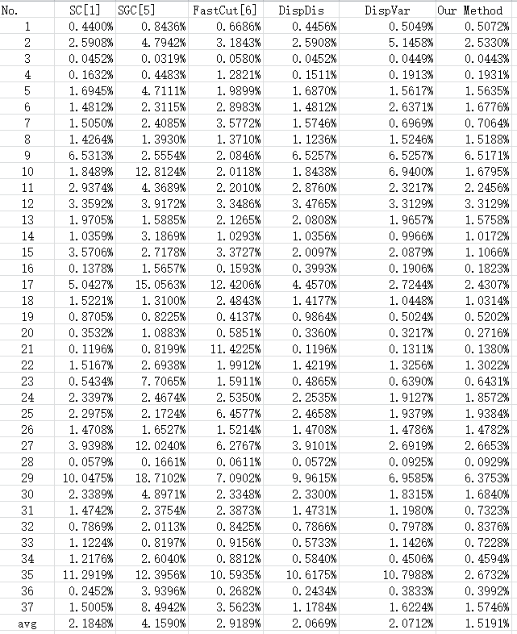

This data set consists of a set of 37 stereo image pairs, together with
three input images for each: the ground truth,the stroke and the disparity map.
The purpose of the data set is to test selection algorithms on stereo image pairs.
The original images （No.1-30） from the Adobe Stereo Selection Data Set[1].
The images in the Adobe Stereo Selection Data Set can be
downloaded from http://www.adobe.com/go/datasets on the datasets page.
The images (No.31-No.32) selected from http://vision.middlebury.edu/stereo/data/.
The another five stereo image pairs (No.33-37) selected from the
dataset in [2].
The images must be download as following:
No.31:2006 dataset[3,4] (http://vision.middlebury.edu/stereo/data/scenes2006/):baby3
No.32:2005 dataset[3,4] (http://vision.middlebury.edu/stereo/data/scenes2005/):Reindeer
No.33:dataset[2](http://web.cecs.pdx.edu/~fliu/project/stereo-saliency/):#4
No.34:dataset[2](http://web.cecs.pdx.edu/~fliu/project/stereo-saliency/):#403
No.35:dataset[2](http://web.cecs.pdx.edu/~fliu/project/stereo-saliency/):#460
No.36:dataset[2](http://web.cecs.pdx.edu/~fliu/project/stereo-saliency/):#605
We show the image,the ground truth,the stroke,the numero sign as follow:

[1]Price, S. Cohen "StereoCut: Consistent Interactive Object Selection in Stereo
Image Pairs", IEEE International Conference on Computer Vision, 2011.
[2]Yuzhen Niu, Yujie Geng, Xueqing Li, and Feng Liu. Leveraging Stereopsis for Saliency Analysis.
IEEE CVPR 2012.
[3] D. Scharstein and C. Pal. "Learning conditional random fields for stereo," IEEE
Computer Society Conference on Computer Vision and Pattern Recognition, 2007.
[4] Heiko Hirschm¨ulle and D. Scharstein. "Evaluation of cost functions for stereo
matching", IEEE Computer Society Conference on Computer Vision and Pattern
Recognition, 2007.
